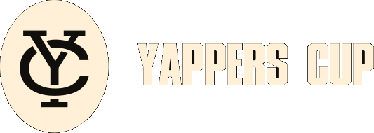

← Back to the siteYappers Cup 2026 · Sunday 29 November
The Yappers Cup is a social, community footy match run by a group of volunteer mates to raise money for Movember. By claiming a position, signing up as a supporter or partner, or turning up on the day, you agree to these terms.
"Organisers", "we" and "us" means the people who organise and help run the Yappers Cup, including volunteers, umpires, team managers and helpers. "Released parties" means the organisers, plus our partners and sponsors, the owner and manager of the venue, and Movember. "You" means anyone who signs up, plays, volunteers or attends.
You understand that Australian rules football involves running, tackling, bumping, marking contests and collisions, on a surface that may be uneven, wet or hard. There is a real risk of injury, including sprains, fractures, dislocations, concussion and other head injuries, dental injuries, and in rare cases serious or permanent injury or death.
You voluntarily choose to take part, and you accept these risks, whether or not they're listed here.
To the maximum extent permitted by law, you release the released parties from all liability, and agree not to make any claim against them, for any personal injury, illness, death, loss or damage (including damage to or loss of property) that you suffer as a result of taking part in or attending the Yappers Cup. This includes training, warm-ups, the match and any related activities before or after it, however caused, including by negligence.
The Yappers Cup is a recreational activity. Nothing in these terms excludes, restricts or changes any right or remedy you have under the Australian Consumer Law or any other law that cannot lawfully be excluded.
Spectators also attend at their own risk. Stay behind the boundary line, keep an eye out for footies coming over the fence, and supervise any children you bring. Section 04 applies to supporters and spectators too.
Look after your own gear, valuables and vehicle. We're not responsible for anything lost, stolen or damaged.
We may change the date, time, venue, format or rules, or cancel the event (for example because of bad weather, an unsafe ground, or venue availability). We'll let registered players and supporters know as soon as we can.
We'll take photos and video on the day and may share them on our website and social channels and with Movember and our partners. If you'd rather not appear, let an organiser know on the day.
We use the details you give us only to run the Yappers Cup: managing teams, matching donations and contacting you about the event. We don't sell your details. Ask us at any time to update or delete them.
The Yappers Cup is an independent community fundraiser. It isn't organised, run or insured by Movember.
If you put your score on the goal-kicking leaderboard, the name you choose, your team and your score can be shown publicly on this site. Keep names PG; we can remove any entry at our discretion. Your email is never shown. We use it to contact you about the Yappers Cup, and you can ask us to stop at any time.
These terms are governed by the laws of Victoria, Australia. If any part of these terms isn't enforceable, the rest still applies. We may update these terms, and the version on this page at the time you sign up is the one that applies to you.